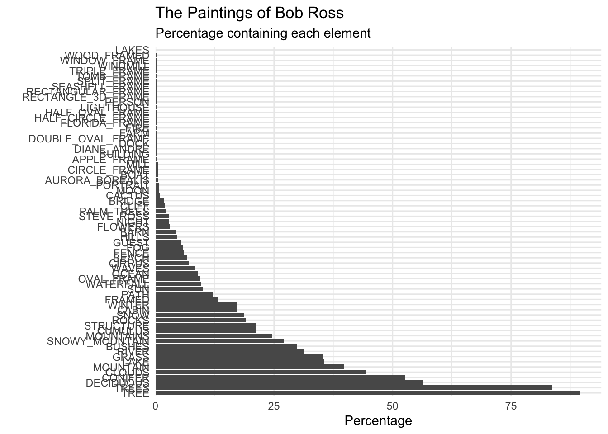

Presentation Exercise
Placeholder file for the future data/results presentation exercise.
The Original Graph
A Statistical Analysis of the Work of Bob Ross

This graph comes from an article titled “A Statistical Analysis of Bob Ross by FiveThirtyEight.
Re-creation
I utilized ChatGPT4 to help me recreate the original graph. Here are some of the prompts and responses:
I asked the AI to help me recreate the original graph:
Input:
Can you help me to recreate this graph using R code? I’ve got the data and can provide more information about the dataset as needed. (Attached graph image)
ChatGPT:
Absolutely, I can help you recreate this graph using R. Could you please provide the dataset or the data points you have? Once I have the data, I can write and run the R code to generate a similar bar chart.
Input:
(Attached dataset ‘elements-by-episode.csv’)
Code generated by the AI, first attempt:
# Loading required libraries
library(here)
library(dplyr)
library(ggplot2)
library(tidyverse)
library(gt)
# Print the resolved file path
print(here("presentation-exercise", "elements-by-episode.csv"))[1] “/Users/lizahall/Desktop/School/Spring 2024/Applied Data Analysis/GitHub/lizahall-MADA-portfolio/presentation-exercise/elements-by-episode.csv”
# Load the data
data <- read_csv("../presentation-exercise/elements-by-episode.csv")
# Calculate the percentage of episodes containing each element
percentages <- colSums(data[,-(1:2)]) / nrow(data) * 100
# Create a data frame for plotting
plot_data <- data.frame(Element = names(percentages), Percentage = percentages) %>%
arrange(desc(Percentage))
# Plot the data using ggplot2
ggplot(plot_data, aes(x = reorder(Element, -Percentage), y = Percentage)) +
geom_bar(stat = "identity") +
coord_flip() + # Flip the coordinates to make a horizontal bar chart
theme_minimal() +
labs(title = "The Paintings of Bob Ross",
subtitle = "Percentage containing each element",
x = "",
y = "Percentage") +
scale_y_continuous(expand = expansion(mult = c(0, 0.05))) # Add a little space at the end of bars
ChatGPT seemed to have a lot of trouble with this one. Since the data had been manually grouped and not all of the variables were included it seemed to struggle to generate code that reproduced the results of the graph. However it did do a fairly good job capturing the general formatting after some more specific prompting.
Input:
Can you make the bars light blue, and also have the highest percentages on the top?
ChatGPT:
Certainly! To make the bars light blue, you can specify the fill argument inside the geom_bar() function. Since the data is already sorted in descending order from the previous code, the highest percentages will be on the top. Here is the updated R code with these adjustments:
Code generated by the AI, second attempt:
# Load the data
data <- read_csv(here("presentation-exercise", "elements-by-episode.csv"))
# Calculate the percentage of episodes containing each element
percentages <- colSums(data[,-(1:2)]) / nrow(data) * 100
# Create a data frame for plotting
plot_data <- data.frame(Element = names(percentages), Percentage = percentages) %>%
arrange(Percentage) # Sort in ascending order for correct plotting after coord_flip()
# Plot the data using ggplot2 with light blue bars and correct order
ggplot(plot_data, aes(x = reorder(Element, Percentage), y = Percentage)) +
geom_bar(stat = "identity", fill = "lightblue") +
coord_flip() + # Flip the coordinates to make a horizontal bar chart
theme_minimal() +
labs(title = "The Paintings of Bob Ross",
subtitle = "Percentage containing each element",
x = "",
y = "Percentage") +
scale_y_continuous(expand = expansion(mult = c(0, 0.05))) # Add a little space at the end of barsWhile closer, it was still pretty far from the original graph. So the next edits were done manually. There was a lot of manual adjusting to be done.
Final Plot
Final attempt, after manual editing:
# Load the filtered data
data <- read_csv(here("presentation-exercise", "elements-by-episode.csv"))
# Updated list of categories with "MOUNTAIN" and optionally "MOUNTAINS"
categories <- c("TREE", "TREES", "DECIDUOUS", "CONIFER", "CLOUDS", "CUMULUS", "CIRRUS", "LAKE", "RIVER", "SNOW", "MOUNTAIN", "MOUNTAINS", "GRASS", "BUSHES", "WATERFALL", "WINTER", "CABIN", "FRAMED", "PATH", "OVAL_FRAME", "OCEAN", "WAVES", "BEACH", "FENCE", "FOG", "HILLS", "BARN", "NIGHT", "FLOWERS", "PALM_TREES", "CLIFF", "BRIDGE", "STRUCTURE", "SNOWY_MOUNTAIN", "ROCKS", "SUN") # Note: Adjust column names as needed based on actual dataset column names
# Filter columns based on the updated list
filtered_data <- select(data, all_of(categories))
# Calculate the percentage of episodes each element appears in, excluding the EPISODE and TITLE columns
element_percentages <- colSums(filtered_data) / nrow(filtered_data) * 100
# Create a data frame for plotting
element_percentages_df <- data.frame(Element = names(element_percentages), Percentage = element_percentages)
# Sort the data frame in ascending order of percentage for correct ordering after coord_flip
element_percentages_df <- element_percentages_df %>%
arrange(Percentage)
# Define the new names for the elements
new_names <- c("Bridge", "Cliff", "Palm tree", "Nighttime", "Flowers", "Barn", "Hills",
"Fog", "Fence", "Beach", "Cirrus clouds", "Waves", "Ocean", "Oval frame", "Waterfall", "Sun",
"Path", "Frame", "Winter setting", "Cabin", "Snow", "Rocks", "Man-made structure",
"Cumulus clouds", "At least two mountains", "Snow-covered mountain", "Bushes",
"River or stream", "Grass", "Lake", "At least one mountain", "Clouds", "Coniferous tree",
"Deciduous tree", "At least two trees", "At least one tree")
# Replace the old names with the new names in the element_percentages_df dataframe
element_percentages_df$Element <- new_names
# Generate the bar chart with a more condensed aspect ratio and elements ordered correctly
g <- ggplot(element_percentages_df, aes(x = reorder(Element, Percentage), y = Percentage)) +
geom_bar(stat = 'identity', fill = 'skyblue', width = 0.5) + # Reduce bar width
geom_text(aes(label = paste0(round(Percentage), "%")), hjust = -0.1, size = 3, color = "black") + # Round percentages to whole numbers
coord_flip() + # Flip the coordinates to get horizontal bars
labs(title = '', x = '', y = '') + # Removed x axis label
ggtitle("The Paintings of Bob Ross", subtitle = "Percentage containing each element") + # Set title and subtitle
theme_minimal() + # Use a minimal theme for a cleaner look
theme(axis.text.y = element_text(size = 5), # Adjust text size for y axis
axis.title.y = element_blank(), # Remove the y axis label
panel.grid.major = element_blank(), # Remove major grid lines
panel.grid.minor = element_blank(), # Remove minor grid lines
axis.text.x = element_blank(), # Remove x-axis text
axis.ticks.x = element_blank(), # Remove x-axis ticks
plot.title = element_text(hjust = 0, size = 14, face = "bold"), # Adjust title size and position
plot.subtitle = element_text(hjust = 0, size = 10), # Adjust subtitle size and position
plot.margin = margin(t = 1, r = 1, b = 1, l = 1, unit = "cm")) # Adjust plot margin
# Adjust plot aspect ratio and print the plot
print(g, vp = grid::viewport(width = 0.5, height = 1))While there was some variance in the results, overall the two were very similar in appearance and numbers.
Publication style table
Using the code from the final graph, I prompted ChatGPT to help me generate a publication style table.
Input:
(Code for final table) Using the code above, can you generate me a publication style table using the ‘gt’ R package?
ChatGPT:
To create a nice-looking table using the gt package in R, we can start by preparing the data and then formatting it using gt’s styling options. Here’s how you can modify the provided code to create a visually pleasing table:
Code generated by the AI, after more prompting and error correction:
# Load the filtered data
data <- read_csv(here("presentation-exercise", "elements-by-episode.csv"))
# Updated list of categories with "MOUNTAIN" and optionally "MOUNTAINS"
categories <- c("TREE", "TREES", "DECIDUOUS", "CONIFER", "CLOUDS", "CUMULUS", "CIRRUS", "LAKE", "RIVER", "SNOW", "MOUNTAIN", "MOUNTAINS", "GRASS", "BUSHES", "WATERFALL", "WINTER", "CABIN", "FRAMED", "PATH", "OVAL_FRAME", "OCEAN", "WAVES", "BEACH", "FENCE", "FOG", "HILLS", "BARN", "NIGHT", "FLOWERS", "PALM_TREES", "CLIFF", "BRIDGE", "STRUCTURE", "SNOWY_MOUNTAIN", "ROCKS", "SUN") # Note: Adjust column names as needed based on actual dataset column names
# Filter columns based on the updated list
filtered_data <- select(data, all_of(categories))
# Calculate the percentage of episodes each element appears in, excluding the EPISODE and TITLE columns
element_percentages <- colSums(filtered_data) / nrow(filtered_data) * 100
# Create a data frame for the table
element_percentages_df <- data.frame(Element = names(element_percentages), Percentage = element_percentages)
# Sort the data frame in ascending order of percentage for correct ordering
element_percentages_df <- element_percentages_df %>%
arrange(Percentage)
# Define the new names for the elements
new_names <- c("Bridge", "Cliff", "Palm tree", "Nighttime", "Flowers", "Barn", "Hills",
"Fog", "Fence", "Beach", "Cirrus clouds", "Waves", "Ocean", "Oval frame", "Waterfall", "Sun",
"Path", "Frame", "Winter setting", "Cabin", "Snow", "Rocks", "Man-made structure",
"Cumulus clouds", "At least two mountains", "Snow-covered mountain", "Bushes",
"River or stream", "Grass", "Lake", "At least one mountain", "Clouds", "Coniferous tree",
"Deciduous tree", "At least two trees", "At least one tree")
# Replace the old names with the new names in the element_percentages_df dataframe
element_percentages_df$Element <- new_names
# Sort the data frame in descending order of percentage
element_percentages_df <- element_percentages_df %>%
arrange(desc(Percentage))
# Updated script with corrected fmt_number() calls
table_gt <- element_percentages_df %>%
gt() %>%
tab_header(
title = "The Paintings of Bob Ross",
subtitle = "Percentage containing each element"
) %>%
fmt_number(
columns = c("Percentage"), # Updated to use c() instead of vars()
decimals = 1
) %>%
tab_style(
style = list(
cell_text(weight = "bold", size = "larger")
),
locations = cells_title(groups = "title")
) %>%
tab_style(
style = list(
cell_text(weight = "bold")
),
locations = cells_column_labels()
) %>%
tab_style(
style = list(
cell_text(style = "italic")
),
locations = cells_title(groups = "subtitle")
)
print(table_gt)| The Paintings of Bob Ross | |
| Percentage containing each element | |
| Element | Percentage |
|---|---|
| At least one tree | 89.6 |
| At least two trees | 83.6 |
| Deciduous tree | 56.3 |
| Coniferous tree | 52.6 |
| Clouds | 44.4 |
| At least one mountain | 39.7 |
| Lake | 35.5 |
| Grass | 35.2 |
| River or stream | 31.3 |
| Bushes | 29.8 |
| Snow-covered mountain | 27.0 |
| At least two mountains | 24.6 |
| Cumulus clouds | 21.3 |
| Man-made structure | 21.1 |
| Rocks | 19.1 |
| Snow | 18.6 |
| Winter setting | 17.1 |
| Cabin | 17.1 |
| Frame | 13.2 |
| Path | 12.2 |
| Sun | 9.9 |
| Waterfall | 9.7 |
| Oval frame | 9.4 |
| Ocean | 8.9 |
| Waves | 8.4 |
| Cirrus clouds | 6.9 |
| Beach | 6.7 |
| Fence | 6.0 |
| Fog | 5.7 |
| Hills | 4.5 |
| Barn | 4.2 |
| Flowers | 3.0 |
| Nighttime | 2.7 |
| Palm tree | 2.2 |
| Cliff | 2.0 |
| Bridge | 1.7 |